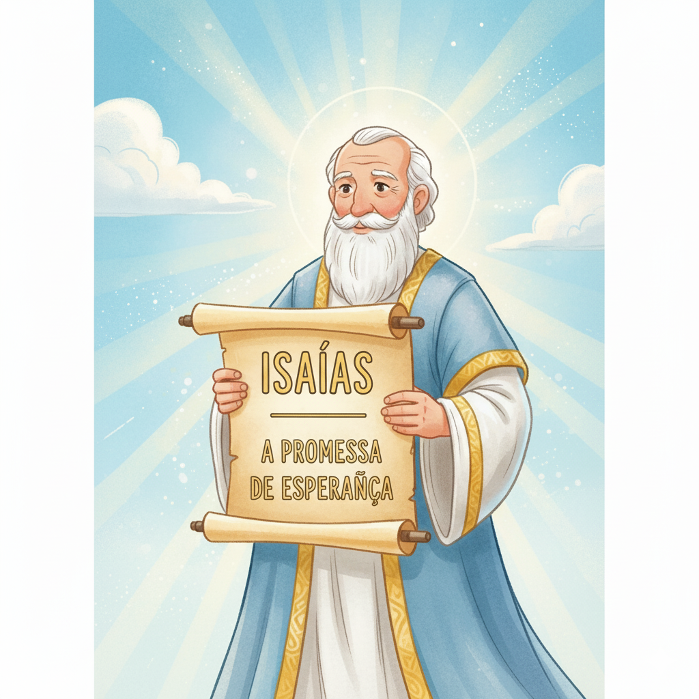
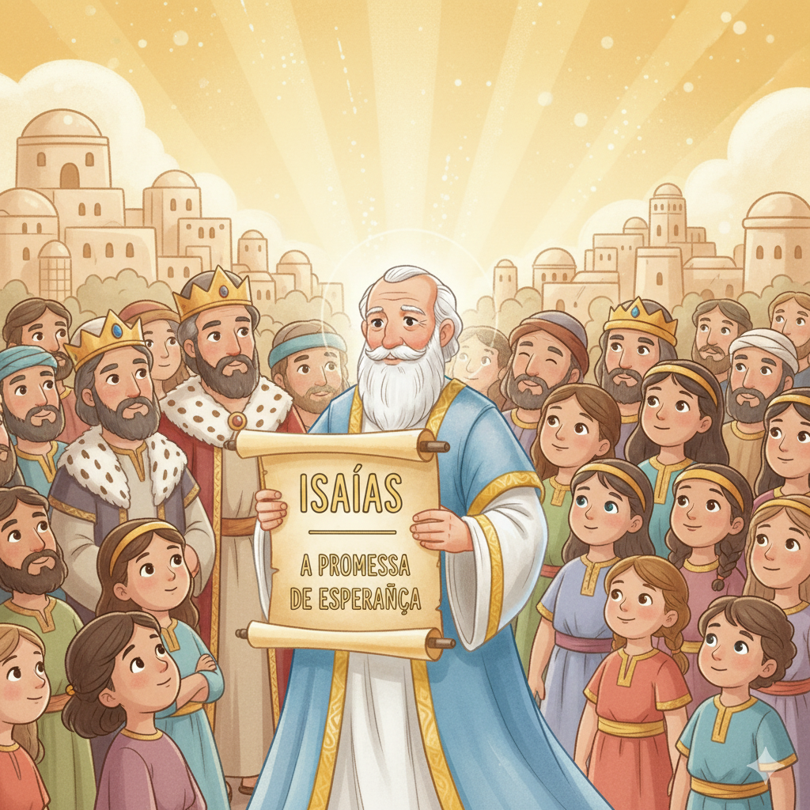
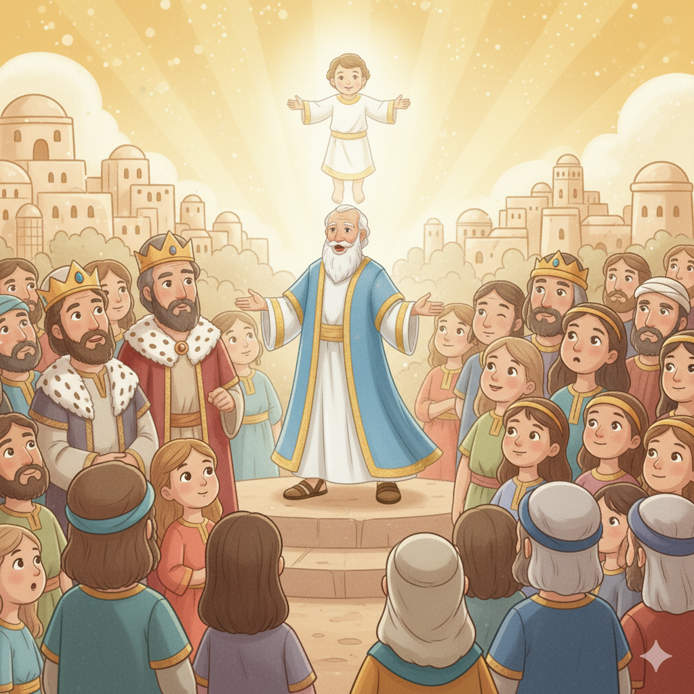
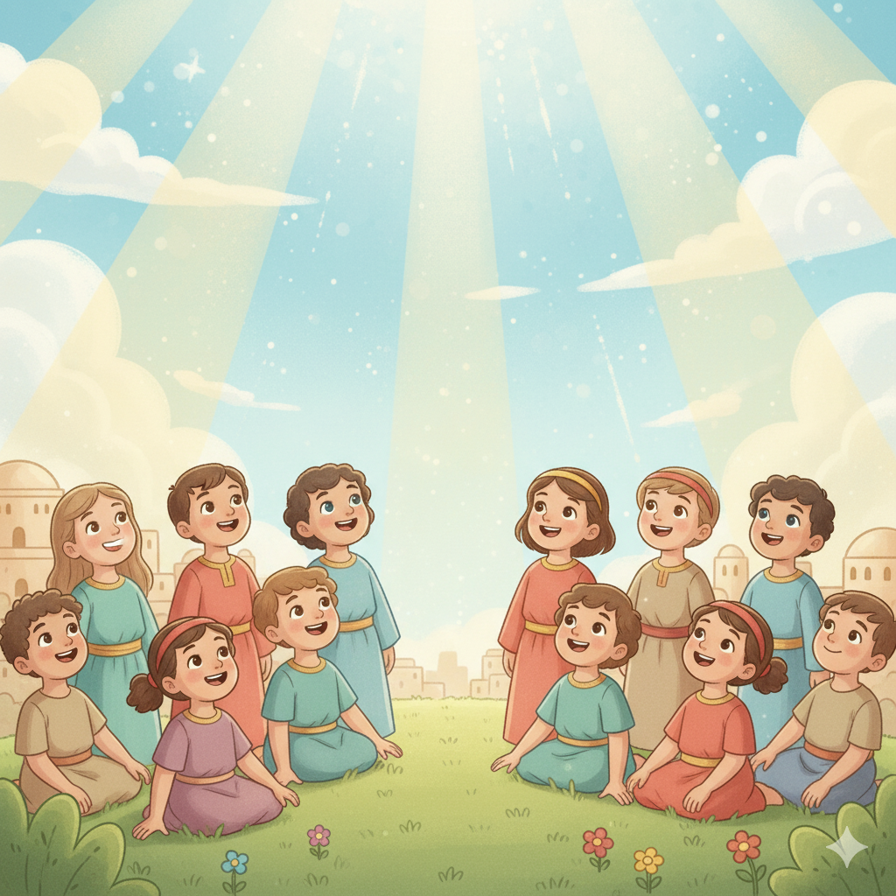
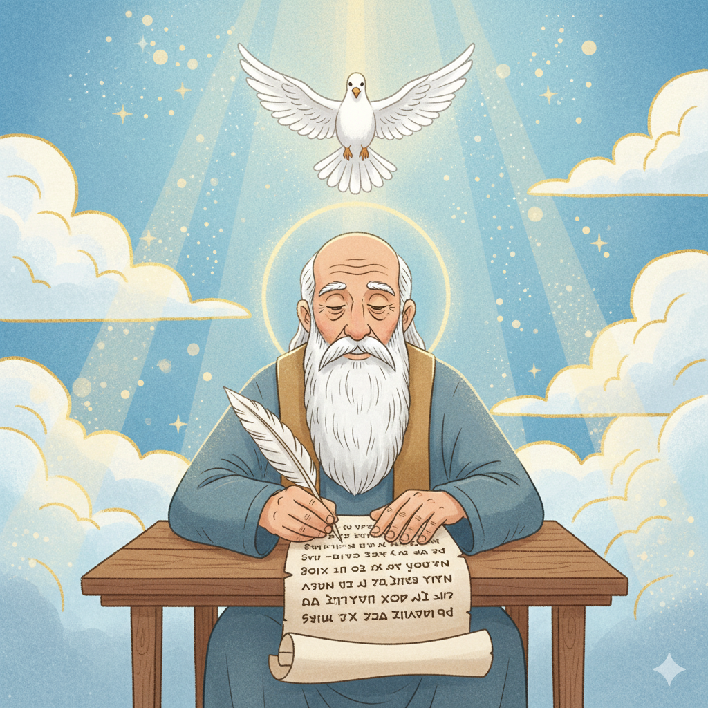
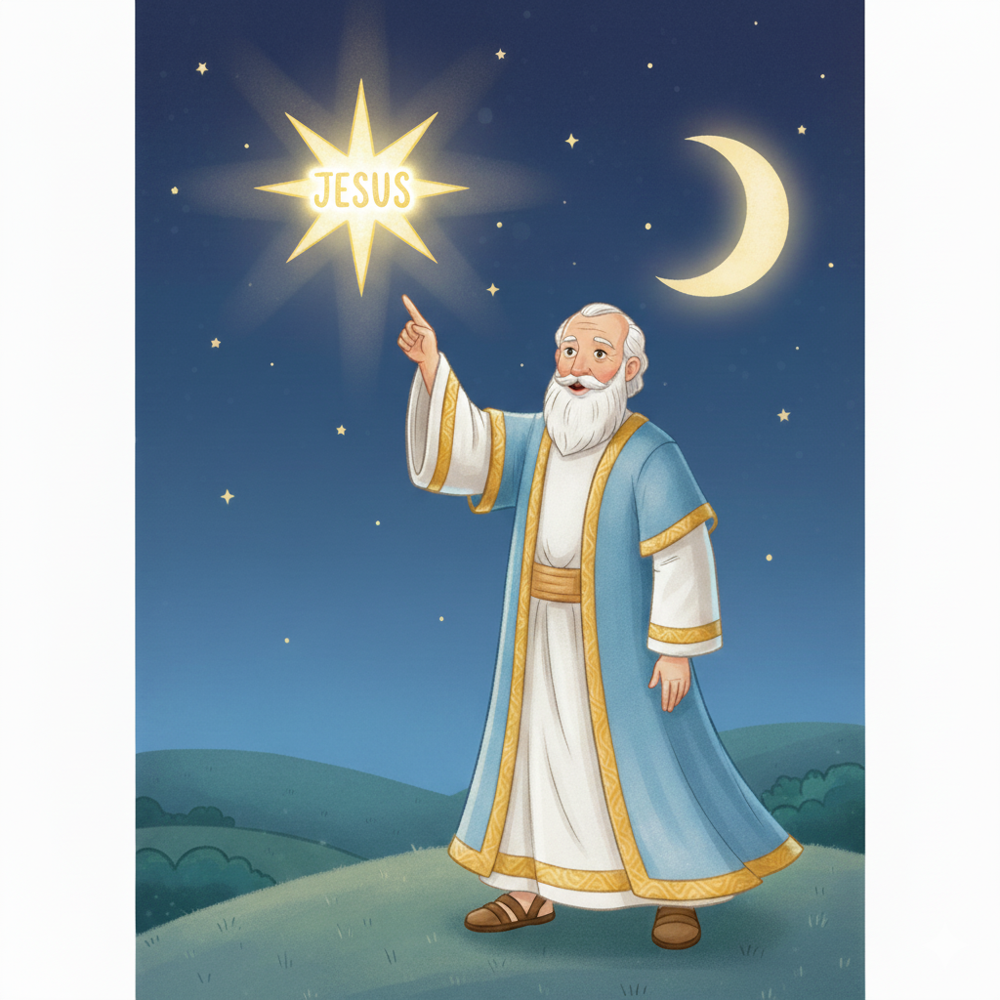

O Profeta Evangelista — Um Resumo Visual para Crianças
Isaías viu a glória de Deus no trono celestial,
Anjos cantavam: "Santo, santo, santo é o Senhor real!"
Deus é perfeito e puro em todo o Seu ser,
Mas também cheio de amor, pronto para acolher!
Mesmo quando pecamos e nos afastamos,
Ele estende Sua mão e nos chamamos!
📖 Isaías 6:3 — "Santo, santo, santo é o Senhor dos Exércitos; toda a terra está cheia da sua glória."
Isaías falou de um Salvador que viria,
"Uma virgem dará à luz" — Emanuel seria!
Servo sofredor que carregaria nossa dor,
Morreria por nós — esse é Jesus, nosso Senhor!
Séculos antes de Cristo nascer,
Isaías já podia ver e conhecer!
📖 Isaías 9:6 — "Porque um menino nos nasceu, um filho nos foi dado... Príncipe da Paz."
Quando cansamos e fraquejamos demais,
Deus vem renovar com forças e com paz!
Quem espera n'Ele voa como a águia altaneira,
Corre sem cansar — que promessa verdadeira!
Não desanime — confie, espere e creia,
Deus nunca falha nem a Sua força fraqueia!
📖 Isaías 40:31 — "Os que esperam no Senhor renovam as suas forças; sobem com asas como águias."
🦅
"Os que esperam no Senhor renovam as suas forças; sobem com asas como águias."
Isaías 40:31
Isaías escreveu isso para um povo cansado e desanimado. A promessa é real: quando você para, ora e espera em Deus — mesmo sem entender — Ele devolve as forças. Como uma águia que usa o vento para voar mais alto sem bater as asas!
Isaías era filho de Amós e profetizou por mais de 40 anos, durante o reinado de quatro reis de Judá. Era culto, poético e corajoso. Numa visão inesquecível, viu Deus no trono e disse "Aqui estou — envia-me!" Seu nome significa "O Senhor salva".
📖 Leia na Bíblia — Isaías 6:8
"Então ouvi a voz do Senhor, que dizia: A quem enviarei, e quem há de ir por nós? Respondi: Aqui estou, envia-me."
Ezequias foi um dos melhores reis de Judá. Quando o poderoso exército da Assíria cercou Jerusalém, ele não entrou em pânico — foi ao templo, estendeu a carta do inimigo diante de Deus e orou. Naquela noite, 185.000 soldados inimigos morreram!
📖 Leia na Bíblia — Isaías 37:15-16
"E Ezequias orou ao Senhor, dizendo: Ó Senhor dos Exércitos, Deus de Israel... tu és o único Deus de todos os reinos da terra."
O capítulo 53 de Isaías descreve alguém que sofre para salvar outros — sem ter feito nada de errado. Escrito 700 anos antes de Jesus, esse texto descreve com perfeição a crucificação: ferido por nossas transgressões, curado pelas Suas chagas!
📖 Leia na Bíblia — Isaías 53:5
"Ele foi ferido pelas nossas transgressões e moído pelas nossas iniquidades... pela sua ferida fomos sarados."


📖 Curiosidade incrível!
Isaías tem 66 capítulos — a Bíblia tem 66 livros! Os primeiros 39 capítulos falam de julgamento (39 livros do AT); os últimos 27 falam de consolo e salvação (27 livros do NT)!
⚖️ Parte 1 (Cap. 1–39): Julgamento e Chamado
O povo de Israel e as nações ao redor afastaram-se de Deus. Isaías entrega avisos sérios — mas também convites: "Venham, vamos raciocinar juntos... os vossos pecados, embora sejam como a escarlata, se tornarão brancos como a neve."
📖 Isaías 1:18 — "Vinde, e arrazoemos, diz o Senhor; se os vossos pecados forem como a escarlata, tornar-se-ão brancos como a neve."
🕊️ Parte 2 (Cap. 40–66): Consolo e Salvação
A segunda metade começa com "Consolai, consolai o meu povo!" — e traz as mais belas promessas: o Servo Sofredor (Is 53), o Espírito do Senhor (Is 61, que Jesus leu na sinagoga!), e o novo céu e nova terra (Is 65).
📖 Isaías 40:1 — "Consolai, consolai o meu povo, diz o vosso Deus."
🌟 O Clímax: Isaías 53 — O Servo Sofredor
No capítulo mais famoso, Isaías descreve um homem inocente que sofre e morre para salvar outros — ferido por nossas culpas, curado pelas suas chagas. Escrito 700 anos antes, descreve Jesus com precisão impressionante!
📖 Isaías 53:6 — "Todos nós nos desviamos como ovelhas; cada um se voltou para o seu caminho; mas o Senhor fez cair sobre ele a iniquidade de nós todos."
Isaías é citado mais de 400 vezes no Novo Testamento! Jesus leu de Isaías na sinagoga (Lc 4:17-21), João Batista cumpriu Is 40:3, e o próprio Jesus disse que veio para cumprir Is 61. É o livro profético mais conectado a Jesus!
📖 Isaías 61:1 (lido por Jesus em Lc 4)
"O Espírito do Senhor está sobre mim, porque o Senhor me ungiu para pregar boas novas aos pobres."
Isaías 40:31 é um dos versículos mais amados da Bíblia — uma promessa direta para momentos de cansaço, tristeza e dificuldade. Quem espera em Deus recebe força nova. Não quem faz mais esforço — quem espera!
📖 Isaías 40:31
"Correm e não se cansam; caminham e não se fatigam."
Isaías 7:14 profetiza a virgem que daria à luz Emanuel. Isaías 9:6 descreve "Príncipe da Paz". Isaías 53 descreve a morte expiatória. Isaías 61 descreve a missão de Jesus. Nenhum livro do AT aponta para Jesus com mais clareza!


Isaías foi enviado para dizer ao povo: voltem para Deus antes que seja tarde! Mas também para mostrar que Deus é cheio de misericórdia — Ele perdoa quem se arrepende, não importa o tamanho do erro.
📖 Isaías 55:7
"Abandone o ímpio o seu caminho, e o homem mau os seus pensamentos; converta-se ao Senhor, e ele se compadecerá dele."
A grande missão de Isaías foi revelar que Deus já tinha o plano: um Salvador viria — nascido de uma virgem, chamado Príncipe da Paz, que morreria pelos pecados do povo e ressuscitaria para dar vida eterna!
📖 Isaías 7:14
"Portanto, o mesmo Senhor vos dará um sinal: eis que a virgem conceberá, e dará à luz um filho, e chamará o seu nome Emanuel."
🌟 Lição Principal: Deus sempre cumpre as Suas promessas — mesmo quando o povo erra, Ele não desiste. Sempre há esperança para quem volta para Ele!
📜 O Rolo de Isaías nos Manuscritos do Mar Morto: Em 1947, um pastor encontrou numa caverna em Qumran um rolo com o livro de Isaías inteiro — escrito 100 anos antes de Cristo! Era praticamente idêntico ao texto que temos hoje. A Bíblia não mudou!
📖 66 capítulos = 66 livros: Isaías tem exatamente 66 capítulos, como a Bíblia tem 66 livros. E as duas partes (39 + 27 capítulos) espelham o AT (39 livros) e o NT (27 livros). Coincidência ou plano de Deus?
🕍 Jesus leu Isaías na sinagoga: Em Lucas 4:17-21, Jesus abriu o rolo de Isaías no capítulo 61, leu a profecia e disse: "Hoje esta escritura se cumpriu!" Ele mesmo confirmou que aquele texto falava sobre Ele!

Converse com sua família, turma ou professor sobre essas perguntas!
🙋
Isaías ouviu Deus perguntar "quem enviarei?" e respondeu "Aqui estou!" sem saber o que viria. Se Deus te pedisse para fazer algo difícil por Ele, você estaria disposto? O que te daria coragem?
🔮
Isaías 53 descreve Jesus com detalhes precisos — 700 anos antes! O que isso te diz sobre Deus? Como isso aumenta sua confiança de que Deus também tem um plano bom para a sua vida?
🦅
Is 40:31 promete força nova para quem espera em Deus. Você está se sentindo cansado ou desanimado com alguma coisa? Como você pode "esperar no Senhor" nessa situação esta semana?
Escolha um desafio (ou faça os três!) e seja um explorador da Bíblia!
📖
Leia o capítulo 53 de Isaías e pense em Jesus enquanto lê. Depois pergunte para alguém: qual frase te fez lembrar mais da história de Jesus? Compartilhe o que descobriu!
✍️
Escreva "Os que esperam no Senhor renovam as suas forças" e coloque onde você vai ver toda manhã. Repita o versículo antes de sair de casa — especialmente nos dias mais difíceis!
🙋
Escreva uma oração curta baseada em Isaías 6:8 — "Aqui estou, Senhor!" — dizendo a Deus uma área da sua vida onde quer ser usado por Ele. Não precisa ser grande: pode ser na escola, em casa ou com amigos!
Trilho Kids | Desenvolvido com ❤️ para crianças © 2025